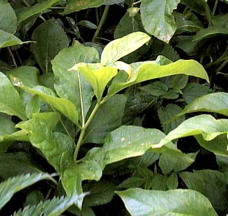
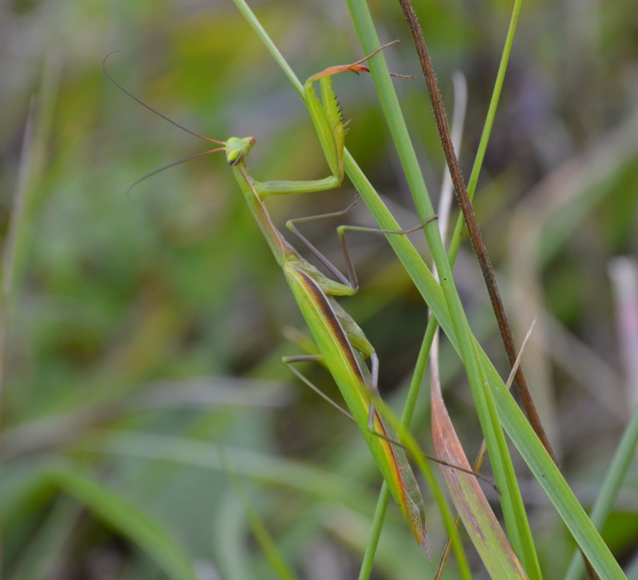

Geologia
Dominującym utworem geologicznym są łupki i piaskowce inoceramowe oraz piaskowce i łupki krośnieńskie.
Wody
Cieki (potoki) wchodzą w skład zlewni rzeki San. Potoki "Kamienny" i "Grabnik" w miejscowości Rybotycze wpływają do rzeki Wiar, która następnie wpada do rzeki San w miejscowości Przemyśl. Inne cieki (bez nazwy) uchodzą do potoku Cisowa, który wpada do rzeki Olszanka prowadzącej wody do rzeki San w miejscowości Olszany.
W potoku "Kamiennym" niegdyś można było spotkać raki, a obecnie i tylko w dolnym jego biegu żyją drobne ryby. Potok "Grabnik" wypływa z "cudownego źródełka", niedaleko grodziska w lesie Grabnik.
Gleby
Występują gleby brunatne i płowe utworzone ze skał masywnych (gleby pyłowe i ilaste) oraz utworzone ze skał luźnych (lessy i utwory ilaste).
Przyroda
Według podziału geobotanicznego Kopysno znajduje się w dziale - Wschodniokarpackim, krainie - Karpaty Wschodnie, okręgu - Pogórze Strzyżowsko-Dynowsko-Przemyskie, podokręgu Birczańskim. Kopysno znajduje się w VIII krainie przyrodniczo-leśnej - Karpackiej, dzielnicy - Pogórze Środkowobeskidzkie, mezoregionie - Pogórze Przemyskie. Dominującym zespołem potencjalnej roślinności naturalnej na tym terenie są: Tilio-Carpinetum odm. małopolska f. podgórska oraz Dentario glandulosae-Fagetum odm. wschodniokarpacka.
Ochrona przyrody
Na terenie Kopysna znajdują się następujące formy ochrony przyrody:
- parki krajobrazowe:
Park Krajobrazowy Pogórza Przemyskiego (obejmuje całą miejscowość).
- sieć NATURA 2000:
PLB 180001 Pogórze Przemyskie (obejmuje całą miejscowość),
PLH 180012 Ostoja Przemyska (obejmuje całą miejscowość).
- rezerwaty przyrody:
"Kopystańka" o powierzchni 188,67 ha (obejmuje część gruntów Kopysna i część gruntów Posady Rybotyckiej - zob. bdl.lasy.gov.pl). Przedmiotem ochrony w rezerwacie objęto szczyt niezalesionej góry "Kopystańka" (541 m. n.p.m.) wraz z występującymi murawami kserotermicznymi i stanowiskiem naturalnym ostrożenia siedmiogrodzkiego, jak również zalesionym południowym zboczem góry ze zbiorowiskiem roślinnym podgórskiej formy buczyny karpackiej (Oddz. 49, 50 i 51). Na zboczach góry dominuje kłosownica pierzasta a osobliwością jest występowanie ostrożenia siedmiogrodzkiego, tymotka Bohemera, przetacznika ząbkowanego zw. austriackim, przetacznika wiosennego. Na terenie rezerwatu stwierdzono występowanie: orlika krzykliwego, puszczyka uralskiego, dzięcioła zielonosiwego.
Tablica informacyjna rezerwatu
- użytki ekologiczne:
"Góra Kopystanka" o powierzchni 42,24 ha we władaniu Agencji Własności Rolnej Skarbu Państwa (użytek wchodzi w skład rezerwatu przyrody "Kopystańka"),
"Zespół użytków ekologicznych 'Kopysno'" o powierzchni 8,76 ha we władaniu Nadleśnictwa Bircza(Oddziały 47 - f, h, j, k, l, p, r, cx; 47A - a, g; 7 - g). Celem ochrony są płaty nieużytkowanej roślinności, murawy kserotermiczne oraz bagno.
- pomniki przyrody:
2 dęby szypułkowe o obwodach pni - 380 i 420 cm (wysokość 20 i 21 m), rosnące w lesie należącym do Nadleśnictwa Bircza (Oddział 47A - c),
buk pospolity o obwodzie pnia - 435 cm, rosnący w lesie należącym do Nadleśnictwa Bircza (Oddział 47A - c),
kasztanowiec pospolity o obwodzie pnia - 260 cm, rosnący w lesie należącym do Nadleśnictwa Bircza (Oddział 47 - p),
czereśnia ptasia o obwodzie pnia - 245 cm, rosnąca w lesie należącym do Nadleśnictwa Bircza (Oddział 5A - b).
Dokładną lokalizację i szczegółowe informacje na temat w/w form ochrony przyrody można znaleźć na stronie geoserwis.gdos.gov.pl.
Lasy
Pod względem własności większość stanowią lasy państwowe zarządzane przez Nadleśnictwa: Bircza i Krasiczyn, pozostałe są własnością AWRSP (7,22 ha) a część znajduje się w rękach prywatnych (21,52 ha).
Szczegółowe informacje na temat lasów można znaleźć na stronie - bdl.lasy.gov.pl.
Łowiectwo
Kopysno podzielone jest na dwa obwody łowieckie (zob. bdl.lasy.gov.pl). Obwód nr 169 dzierżawi Koło Łowieckie "Dzik" a obwód nr 170 Koło Łowieckie "Ryś", wszystkie zrzeszone w ZO PZŁ Przemyśl.
Sosna czarna
Pinus nigra J.F. Arnold
rosnąca na Horbysku
Ostrożeń siedmiogrodzki
Cirsium decussatum Janka syn. Cirsium eriophorum (L.)
Scop. subsp. decussatum (Janka) Petr.
[Copyright © by Tomek Żak]

Lulecznica kraińska
Scopolia carnicolica Jacq.
Obrazki plamiste
Arum maculatum L.
w tle Marzanka wonna, Bluszcz pospolity
[Copyright © by Magda Żak]
Zimowit jesienny
Colchicum autumnale L.

Modliszka zwyczajna
Mantis religiosa
{kind=link}